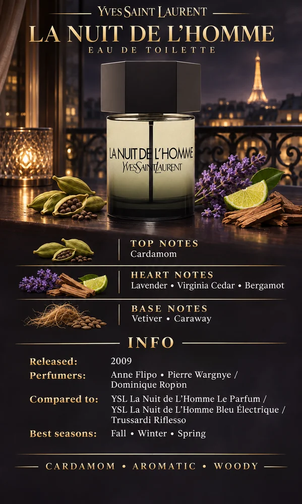

Yves Saint Laurent
La Nuit de L'Homme Eau de Toilette
β Beta Designer · Eau de Toilette · 2009 In collection
Randy's rating9/10
Public rating9/10
Overall R22.5/25
Normalized N0.900
R = 9 × 1.3 + 9 × 1.2 = 22.5 of 25 · N = 22.5 ÷ 25 = 0.900 How scores work
Notes
Top notes
- cardamom
Heart notes
- lavender
- Virginia cedar
- bergamot
Base notes
- vetiver
- caraway
Details
| House | Yves Saint Laurent |
|---|---|
| Type | Designer · β Beta |
| Concentration | Eau de Toilette |
| Released | 2009 |
| Perfumer | Anne Flipo, Pierre Wargnye, and Dominique Ropion |
| Scent family | Woody, Spicy, Aromatic |
| Best seasons | Spring, Fall, Winter |
| Similar to | YSL La Nuit de L'Homme Le Parfum YSL La Nuit de L'Homme Bleu Électrique Trussardi Riflesso |
Sources
Fragrantica 4.45/5 (about 8.9/10) from 25,342 votes; Parfumo 8.4/10 from 5,439 ratings, ranked #10 in men's. Classic date-night cardamom; rounded to 9. Checked 2026-11-06.